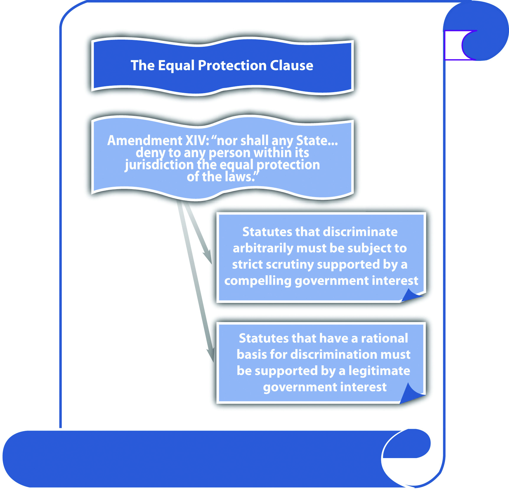

Although the legislative branch’s prohibited powers are in Article I of the Constitution, the Bill of Rights contains most of the constitutional protections afforded to criminal defendants. The Bill of RightsThe first ten amendments to the Constitution. is the first ten amendments to the Constitution. In addition, the Fourteenth Amendment, which was added to the Constitution after the Civil War, has a plethora of protections for criminal defendants in the due process and equal protection clauses.
The Bill of Rights was originally written to apply to the federal government. However, US Supreme Court precedent has held that any constitutional amendment that is implicit to due process’s concept of ordered liberty must be incorporated into the Fourteenth Amendment’s protections and applied to the states.Duncan v. Louisiana, 391 U.S. 145 (1968), accessed October 20, 2010, http://caselaw.lp.findlaw.com/scripts/getcase.pl?court=us&vol=391&invol=145. This doctrine is called selective incorporationApplying the Bill of Rights’ constitutional protections to the states through the Fourteenth Amendment., and it includes virtually all the constitutional protections in the Bill of Rights. Thus although the original focus of the Bill of Rights may have been limiting the federal government, modern interpretations of the Constitution ensure that its protections also extend to all levels of state and local government.
The due process clauseA clause in the Fifth Amendment (which applies to the federal government) and the Fourteenth Amendment (which applies to the state government) providing that no individual will be deprived of life, liberty, or property without due process of law. states, “No person shall…be deprived of life, liberty, or property, without due process of law.” The due process clause in the Fifth Amendment applies to federal crimes and federal criminal prosecutions. The federal due process clause is mirrored in the Fourteenth Amendment, which guarantees due process of law in state criminal prosecutions. Most states have a similar provision in their constitutions.Missouri Constitution, art. I, § 10, accessed October 10, 2010, http://www.sos.mo.gov/pubs/missouri_constitution.pdf.
Substantive due processThe government cannot unreasonably encroach on an individual’s substantive constitutional rights. protects individuals from an unreasonable loss of substantive rights, such as the right to speak freely and the right to privacy. Procedural due processThe government cannot criminally punish individuals without providing notice and an opportunity to be heard. protects individuals from being criminally punished without notice and an opportunity to be heard. Both substantive and procedural due processes ensure that individuals are not denied their life (capital punishment), liberty (incarceration), or property (forfeiture) arbitrarily.
Void for vaguenessA criminal statute so imprecisely worded that it gives too much discretion to law enforcement, is unevenly applied, and fails to provide notice of what is criminal, violating the right to due process. challenges the wording of a statute under the due process clause. A statute is void for vagueness if it uses words that are indefinite or ambiguous. Statutes that are not precisely drafted do not provide notice to the public of exactly what kind of behavior is criminal. In addition, and more important, they give too much discretion to law enforcement and are unevenly enforced.U.S. v. White, 882 F.2d 250 (1989), accessed October 6, 2010, http://scholar.google.com/scholar_case?case=12667022335593752485&hl=en&as_sdt=2&as_vis=1&oi=scholarr. With a void for vagueness challenge, the statute must be so unclear that “men of common intelligence must guess at its meaning,”Connally v. General Construction Co., 269 U.S. 385 (1926), accessed October 3, 2010, http://supreme.justia.com/us/269/385/case.html. which is an objective standard.
A state legislature enacts a statute that criminalizes “inappropriate attire on public beaches.” Larry, a law enforcement officer, arrests Kathy for wearing a two-piece bathing suit at the beach because in his belief, women should wear one-piece bathing suits. Two days later, Burt, another law enforcement officer, arrests Sarah for wearing a one-piece bathing suit at the beach because in his belief, women should not be seen in public in bathing suits. Kathy and Sarah can attack the statute on its face and as applied as void for vagueness. The term “inappropriate” is unclear and can mean different things to different people. Thus it gives too much discretion to law enforcement, is subject to uneven application, and does not give Kathy, Sarah, or the public adequate notice of what behavior is criminal.
A statute is overbroadA statute that criminalizes both constitutionally protected and constitutionally unprotected conduct, violating the right to due process. if it criminalizes both constitutionally protected and constitutionally unprotected conduct. This challenge is different from void for vagueness, although certain statutes can be attacked on both grounds. An overbroad statute criminalizes too much and needs to be revised to target only conduct that is outside the Constitution’s parameters.
A state legislature enacts a statute that makes it criminal to photograph “nude individuals who are under the age of eighteen.” This statute is probably overbroad and violates due process. While it prohibits constitutionally unprotected conduct, such as taking obscene photographs of minors, it also criminalizes First Amendment protected conduct, such as photographing a nude baby.
Figure 3.3 The Due Process Clause

The Fourteenth Amendment states in relevant part, “nor shall any State…deny to any person within its jurisdiction the equal protection of the laws.” The equal protection clauseA clause in the Fourteenth Amendment that prohibits the state government from enacting statutes that arbitrarily discriminate. applies to the state government. State constitutions generally have a similar provision.California Constitution, art. I, § 7, accessed October 4, 2010, http://www.leginfo.ca.gov/.const/.article_1. The equal protection clause prevents the state government from enacting criminal laws that discriminate in an unreasonable and unjustified manner. The Fifth Amendment due process clause prohibits the federal government from discrimination if the discrimination is so unjustifiable that it violates due process of law.Bolling v. Sharpe, 347 U.S. 497 (1954), accessed October 4, 2010, http://scholar.google.com/scholar_case?case=16234924501041992561&hl=en&as_sdt=2&as_vis=1&oi=scholarr.
The prohibition on governmental discrimination is not absolute; it depends on the class of persons targeted for special treatment. In general, court scrutiny is heightened according to a sliding scale when the subject of discrimination is an arbitrary classification. Arbitrary means random and often includes characteristics an individual is born with, such as race or national origin. The most arbitrary classifications demand strict scrutiny, which means the criminal statute must be supported by a compelling government interest. Statutes containing classifications that are not arbitrary must have a rational basis and be supported by a legitimate government interest.
Criminal statutes that classify individuals based on their race must be given strict scrutiny because race is an arbitrary classification that cannot be justified. Modern courts do not uphold criminal statutes that classify based on race because there is no government interest in treating citizens of a different race more or less harshly.Loving v. Virginia, 388 U.S. 1 (1967), accessed October 4, 2010, http://www.law.cornell.edu/supct/html/historics/USSC_CR_0388_0001_ZO.html.
Criminal statutes that have a rational basis for discrimination and are supported by a legitimate government interest can discriminate, and frequently do. Criminal statutes that punish felons more severely when they have a history of criminal behavior, for example, three-strikes statutes, are supported by the legitimate government interests of specific and general deterrence and incapacitation. Note that the basis of the discrimination, a criminal defendant’s status as a convicted felon, is rational, not arbitrary like race. Thus although these statutes discriminate, they are constitutional pursuant to the equal protection clause.
Figure 3.4 The Equal Protection Clause
Answer the following questions. Check your answers using the answer key at the end of the chapter.